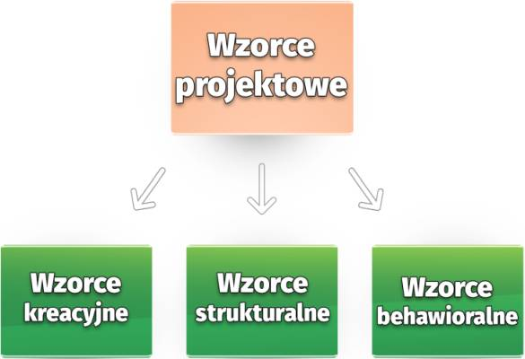

Co to wzorce projektowe
Wzorce projektowe to typowe rozwiązania problemów często napotykanych przy projektowaniu
oprogramowania.
Stanowią coś na kształt gotowych planów które można dostosować, aby rozwiązać powtarzający się problem w
kodzie.
Co składa się na wzorzec?
Większość wzorców posiada formalny opis, dzięki czemu każdy może odtworzyć ich ideę w różnych kontekstach.
Oto sekcje na które zwykle dzieli się opis wzorca:
- Cel pobieżnie opisuje zarówno problem, jak i rozwiązanie.
- Motywacja rozszerza opis problemu i rozwiązania jakie umożliwia dany wzorzec.
- Struktura klas ukazuje poszczególne części wzorca i jak są ze sobą powiązane.
- Przykład kodu w którymś z popularnych języków programowania pomaga zrozumieć ideę wzorca.
Koncepcja Wzorców Projektowych
Koncepcja wzorców została po raz pierwszy opisana przez Christophera Alexandera w książce Język wzorców.
Książka opisuje “język” służący projektowaniu środowiska miejskiego. Jednostkami tego języka są wzorce. Mogą
one opisywać wysokość okien, ilość pięter, powierzchnię terenów zielonych w dzielnicach i tak dalej.
